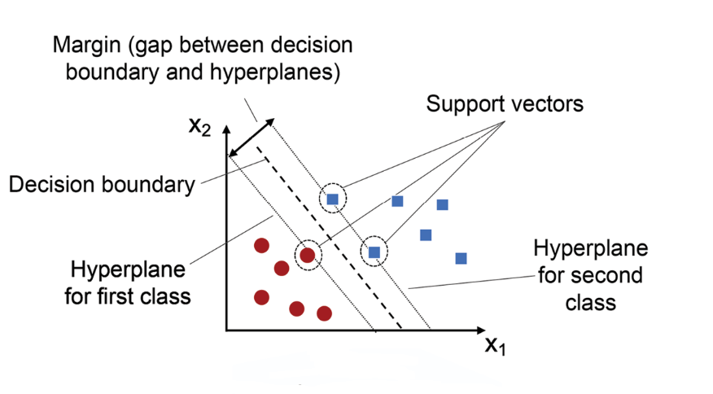
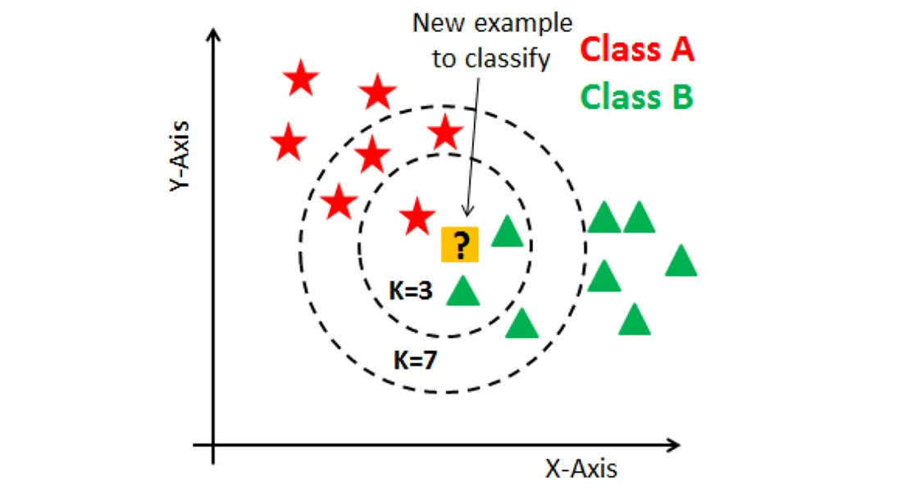
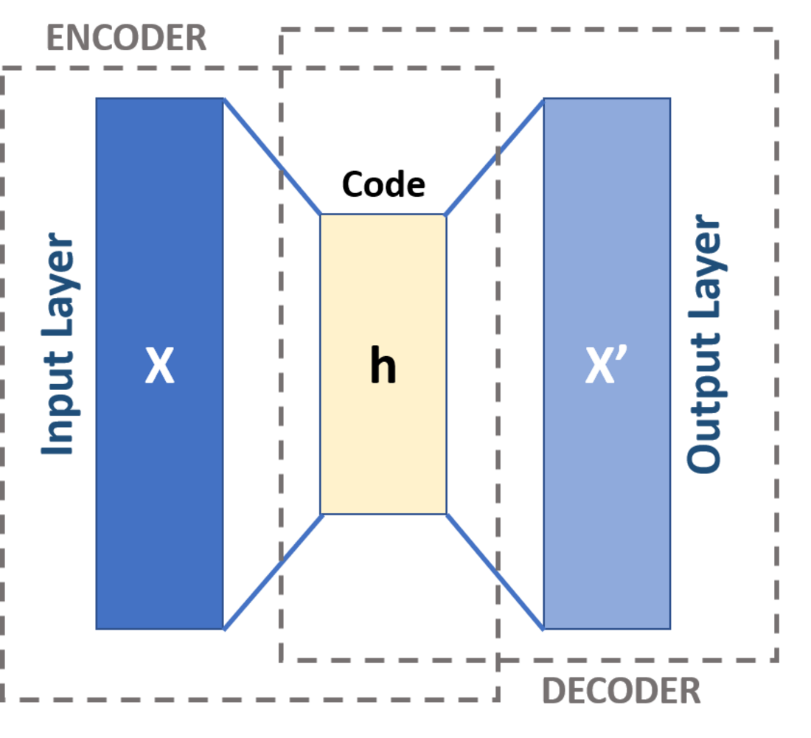
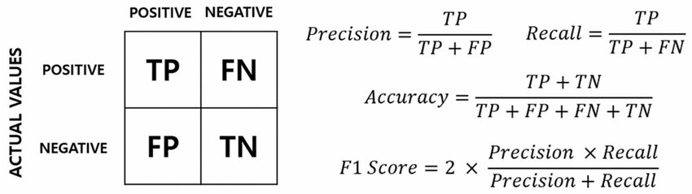
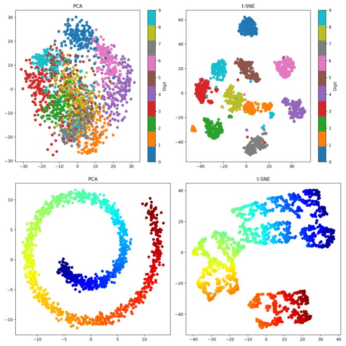
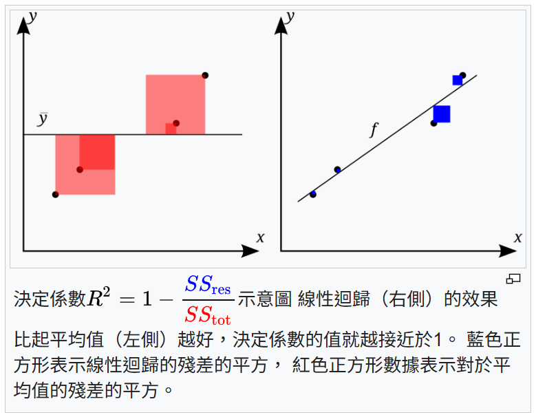

iPAS AI應用規劃師 初級
L11302 常見的機器學習模型
出題方向
1
神經網路基礎 & 評估
2
AI/ML/DL 核心概念
3
模型應用 & 歷史
#1
★★★★
線性迴歸 (Linear Regression) 模型最適合解決哪種類型的問題？
答案解析
線性迴歸 (Linear Regression) 是一種監督式學習 (Supervised Learning)
模型，
主要用於預測 (Prediction) 一個連續值的輸出
。銷售額預測即是預測一個連續的數值（銷售金額），因此最適合使用線性迴歸。圖像分類屬於分類 (Classification) 問題；顧客分群屬於
分群 (Clustering) 或聚類 (Clustering) 問題，通常使用
非監督式學習 (Unsupervised Learning)；遊戲策略學習則屬於強化學習 (
Reinforcement Learning) 的範疇。 (參考樣題 #8)

#2
★★★★
K-平均 (K-means) 演算法的主要目標是什麼？
答案解析
K-平均 (K-means) 是一種常見的非監督式學習 (Unsupervised Learning) 演算法，
其主要目標是將資料集中的觀測點分群到 K 個不同的群組中，使得同一群組內的資料點彼此相似度高，而不同群組間的資料點相似度低。預測類別標籤是
分類 (Classification) 問題；降低維度是降維 (Dimensionality Reduction)
演算法的目標；預測連續數值是迴歸 (Regression) 問題的目標。(參考樣題 #5 及公部門 AI 手冊 p.10, p.39)

#3
★★★★
神經網路 (Neural Network) 與傳統機器學習 (Machine Learning)
模型的主要區別是什麼？
答案解析
傳統機器學習 (Machine Learning) 模型通常需要手動進行特徵工程 (
Feature Engineering)。而神經網路，特別是深度學習 (Deep Learning)，
其核心優勢在於能夠透過其多層 (Layer) 的結構自動學習和提取資料中的複雜特徵和模式
，尤其擅長處理高維度和非線性數據（如圖像、語音、文本）。神經網路通常需要大量數據來進行有效訓練。(參考樣題 #10)

#4
★★★
下列哪一個是常用於分類 (Classification) 問題的機器學習 (Machine Learning)
模型？
答案解析
決策樹 (Decision Tree) 是一種常見的監督式學習 (Supervised Learning)
模型，
可以用於解決分類 (Classification) 和迴歸 (Regression) 問題
。它透過一系列的決策規則將資料進行劃分。線性迴歸主要用於迴歸；K-平均用於分群 (
Clustering)；主成分分析 (PCA) 用於降維 (Dimensionality Reduction)。(參考公部門
AI 手冊 p.39)

#5
★★★★
生成對抗網路 (GAN, Generative Adversarial Network) 主要由哪兩個部分組成？
答案解析
生成對抗網路 (GAN)
是由兩個神經網路組成的框架：生成器 (Generator) 和鑑別器 (
Discriminator)
。生成器的目標是生成看起來像真實數據的新數據樣本，而鑑別器的目標是區分真實數據和由
生成器生成的假數據。兩者在訓練過程中相互競爭、相互學習，最終生成器能夠生成非常逼真的數據。(參考樣題 #11)

#6
★★★★
在機器學習 (Machine Learning) 中，監督式學習 (Supervised Learning) 與
非監督式學習 (Unsupervised Learning) 的主要區別在於？
答案解析
主要的區別在於監督式學習 (Supervised Learning) 使用帶有標籤 (
Label)（即已知正確答案）的資料進行訓練，目標是學習輸入到輸出的映射關係
；而
非監督式學習 (Unsupervised Learning) 使用沒有標籤的資料，目標是探索資料內在的結構或模式
，例如分群 (Clustering) 或降維 (
Dimensionality Reduction)。演算法複雜度、輸出類型和計算資源並非兩者最根本的區別。(參考公部門 AI 手冊 p.10)

#7
★★★
支持向量機 (SVM, Support Vector Machine) 是一種常用於解決哪類問題的
模型？
答案解析
支持向量機 (SVM) 是一種強大的 監督式學習 (
Supervised Learning) 模型，
最常應用於 分類 (Classification) 問題，特別是在高維空間中尋找最佳 超平面 (
Hyperplane) 用以區分不同類別
。此外，也可應用於 迴歸 (Regression) 問題，稱為 支持向量迴歸 (
SVR, Support Vector Regression)。分群 與
降維 屬於 非監督式學習 (Unsupervised Learning)；
強化學習 用於動作決策與策略最佳化；關聯規則學習 則用於挖掘資料間的關聯模式。

#8
★★★
在訓練決策樹 (Decision Tree) 模型時，「過度擬合」(Overfitting) 通常是什麼原因造成的？
答案解析
過度擬合 (Overfitting) 指的是模型過於複雜，以至於
完美地擬合了訓練資料，包括其中的噪聲和異常點，但在新的、未見過的資料上表現不佳。對於決策樹 (Decision Tree) 而言，
樹的深度過深是導致過度擬合的主要原因，因為它會產生非常具體、複雜的規則來區分訓練樣本。限制樹的深度或進行剪枝 (
Pruning) 是防止過度擬合的常用方法。(參考樣題 #13)
#9
★★★★
隨機森林 (Random Forest) 是哪一種機器學習 (Machine Learning) 技術的應用？
答案解析
隨機森林 (Random Forest) 屬於集成學習 (Ensemble Learning) 的一種方法，
它通過構建多個決策樹 (Decision Tree) 並將它們的預測結果進行組合（例如投票或平均）來提高預測的準確性和穩定性
，並能有效減少單個決策樹可能出現的過度擬合 (Overfitting) 問題。

#10
★★★
主成分分析 (PCA, Principal Component Analysis) 主要用於解決什麼問題？
答案解析
主成分分析 (PCA) 是一種常見的非監督式學習 (Unsupervised Learning) 降維 (
Dimensionality Reduction) 技術。
它的主要目的是將高維度的資料轉換為低維度的資料，同時盡可能保留原始資料中的變異性（Variance）。這有助於資料視覺化、去除冗餘特徵以及加速後續機器學習 (
Machine Learning) 演算法的訓練。(參考樣題 #10)

#11
★★★
以下哪種模型最常用於處理自然語言處理 (NLP, Natural Language Processing)
中的序列資料，例如文本翻譯？
答案解析
遞迴神經網路 (RNN)
及其變體（如 LSTM、GRU）的核心設計在於處理具有順序或時間依賴性的資料
，例如文本、語音和時間序列數據。它們具有內部記憶機制，可以捕捉序列中前後元素的關係，因此非常適合用於機器翻譯、情感分析、語言模型等 NLP 任務。
CNN 主要用於圖像處理；SVM 主要用於分類；KNN 用於分類或迴歸，但對序列性處理能力較弱。

#12
★★
邏輯迴歸 (Logistic Regression) 模型的輸出通常是什麼？
答案解析
邏輯迴歸 (Logistic Regression) 雖然名稱中有「迴歸」，但它
主要用於解決二元分類 (Binary Classification) 問題。它透過
Sigmoid 函數將線性組合的輸出轉換為一個介於 0 和 1 之間的機率值，代表某個樣本屬於正類別的機率。然後可以根據這個機率值和一個閾值（通常是
0.5）來進行分類。連續數值是線性迴歸的輸出；群組標籤是分群演算法的輸出；決策規則是決策樹的輸出。

#13
★★★
哪種模型通常用於購物籃分析 (Market Basket Analysis)，找出商品之間的關聯性？
答案解析
購物籃分析旨在發現交易資料中商品同時被購買的模式或關聯規則（例如「購買麵包的顧客也很可能購買牛奶」）。
Apriori 演算法是關聯規則學習 (Association Rule Learning) 中最經典和常用的演算法之一
，用於找出資料集中頻繁出現的項目集，並從中生成關聯規則。線性迴歸用於預測連續值；K-平均用於分群；
決策樹主要用於分類或迴歸。
#14
★★
K-近鄰 (KNN, K-Nearest Neighbors) 演算法如何進行預測？
答案解析
K-近鄰 (KNN) 是一種基於實例的惰性學習 (Lazy Learning) 演算法。
當需要對一個新的、未標記的資料點進行預測時，它會計算該點與訓練集中所有點的距離，找出距離最近的 K 個鄰居。對於分類 (
Classification) 問題，它會根據這 K 個鄰居中最常見的類別標籤來預測新資料點的類別（投票）；對於迴歸 (Regression)
問題，它會取這 K 個鄰居的數值平均值作為預測值。

#15
★★★
樸素貝氏 (Naive Bayes) 分類器的主要假設是什麼？
答案解析
樸素貝氏 (Naive Bayes) 分類器是一種基於貝氏定理 (
Bayes' Theorem) 的概率分類模型。
其核心的「樸素」(Naive) 假設是：所有輸入特徵 (Feature) 在給定類別的條件下，彼此是條件獨立的
。儘管這個假設在現實世界中很少完全成立，但樸素貝氏分類器在許多實際應用中（尤其是在文本分類，如垃圾郵件過濾）仍然表現良好，且計算效率高。

#16
★★★★
在深度學習 (Deep Learning) 模型訓練中，梯度消失 (
Vanishing Gradient) 問題指的是什麼？
答案解析
梯度消失 (Vanishing Gradient) 是在訓練深層神經網路時常見的問題。
在反向傳播 (Backpropagation) 過程中，誤差信號需要從輸出層傳遞回輸入層以更新權重 (
Weight)
。
如果使用的激活函數 (Activation Function)（如 Sigmoid 或 tanh）的導數在其輸入值較大或較小時趨近於 0，那麼在層 (
Layer) 數很多的情況下，梯度在逐層傳遞時會連乘許多小於 1 的數，導致梯度迅速變小，接近於零
。這使得靠近輸入層（即淺層）的權重幾乎無法得到更新，模型學習停滯。相反的情況是梯度爆炸 (
Exploding Gradient)，即梯度變得非常大。
#17
★★★★
長短期記憶 (LSTM, Long Short-Term Memory) 網路主要是為了解決傳統
RNN 的什麼問題而設計的？
答案解析
傳統的遞迴神經網路 (RNN) 在處理長序列時，容易出現梯度消失 (Vanishing Gradient)
或梯度爆炸 (Exploding Gradient) 的問題，這使得它們很難學習和記住序列中較早期的信息，即難以捕捉長期依賴關係。
LSTM 通過引入精密的門控機制 (Gating Mechanism)（輸入門、遺忘門、輸出門）和記憶單元 (
Cell State)，有效地控制了信息的流動和儲存，從而緩解了梯度消失問題，使其能夠更好地處理長序列。(參考樣題 #3)

#18
★★★
下列哪項技術常被用於集成學習 (Ensemble Learning) 中，透過逐步修正先前模型的錯誤來構建強學習器？
答案解析
集成學習 (Ensemble Learning) 旨在結合多個弱學習器來構建一個更強大、更穩健的學習器。提升法 (
Boosting) 是一種序列化的集成方法，
其核心思想是逐步訓練一系列弱學習器，每個後續學習器會更關注先前學習器預測錯誤的樣本，最終將所有弱學習器加權組合起來。常見的 Boosting 演算法包括 AdaBoost、Gradient Boosting Machines (
GBM) 和 XGBoost。裝袋法 (Bagging)（如隨機森林）是並行訓練多個獨立學習器；
堆疊法 (Stacking) 使用一個元學習器來結合多個基礎學習器的預測；投票法 (Voting)
則是簡單地對多個學習器的預測進行投票或平均。

#19
★★
下列哪種機器學習 (Machine Learning) 模型屬於生成模型 (
Generative Model)？
答案解析
生成模型 (Generative Model) 的目標是學習訓練資料的潛在分佈，並能夠生成與訓練資料相似的新數據樣本。判別模型 (
Discriminative Model) 的目標是學習不同類別之間的決策邊界。
生成對抗網路 (GAN) 透過生成器和
鑑別器的對抗過程，專門用於生成新的、逼真的數據樣本
，因此屬於生成模型。SVM、邏輯迴歸和KNN 通常用於
分類 (Classification) 或迴歸 (Regression) 任務，屬於
判別模型。
#20
★★★
哪種模型常用於預測股票價格走勢或天氣預報這類具有時間序列特性的資料？
答案解析
股票價格和天氣預報都屬於時間序列資料 (Time Series Data)，其特點是數據點之間存在時間上的依賴關係。
遞迴神經網路 (RNN) 及其改進版本 LSTM 和
GRU 特別擅長處理這種序列數據
，因為它們的循環結構允許信息在時間步之間傳遞和記憶。CNN 主要用於處理網格狀數據（如圖像）；K-平均用於分群；
SVM 主要用於分類。
#21
★★★★
在推薦系統中，哪種類型的模型會根據使用者過去的行為（如評分、購買紀錄）來預測其可能喜歡的項目？
答案解析
協同過濾 (Collaborative Filtering) 是推薦系統中最常用的技術之一。
它的核心思想是利用使用者群體的行為模式來進行推薦。它假設如果使用者 A 和使用者 B 在過去有相似的偏好，那麼他們在未來也可能喜歡相似的項目
。它主要依賴使用者對項目的評分、點擊、購買等歷史互動數據，而不需要項目的具體內容信息。基於內容的過濾則依賴項目本身的特徵 (
Feature) 和使用者的偏好設定。

#22
★★★
當模型在訓練資料上表現很好，但在新的測試資料上表現很差時，稱為什麼現象？
答案解析
過度擬合 (Overfitting)
指的是機器學習 (Machine Learning) 模型過於複雜，學習了訓練資料中的噪聲和隨機波動，而不是潛在的模式
。這導致模型在訓練集上表現極好（誤差很低），但在從未見過的測試集或新數據上表現差（誤差很高），泛化能力差。擬合不足 (
Underfitting) 則是模型過於簡單，無法捕捉資料中的基本模式，在訓練集和測試集上表現都不好。高偏差通常導致
擬合不足，高變異通常導致過度擬合。(參考樣題 #13)

#23
★★★
自編碼器 (Autoencoder) 是一種主要用於什麼目的的神經網路？
答案解析
自編碼器 (Autoencoder) 是一種非監督式學習 (Unsupervised Learning) 的
神經網路，其目標是學習輸入資料的壓縮表示（編碼），然後再從該壓縮表示中重構原始輸入（解碼）。通過訓練
模型使其重構誤差最小化，中間的壓縮表示（瓶頸層, Bottleneck Layer）就可以被用作原始資料的低維
特徵表示。因此，它常用於降維、特徵學習、去噪等任務。

#24
★★★
在影像辨識任務中，哪種深度學習 (Deep Learning) 模型被證明特別有效？
答案解析
卷積神經網路 (CNN)
是專門為處理具有網格狀拓撲結構的數據（如圖像）而設計的深度學習 (Deep Learning) 模型。
其核心組件卷積層 (Convolutional Layer) 能夠有效地捕捉圖像中的空間層次結構和局部特徵 (
Feature)
，例如邊緣、紋理和形狀。池化層 (Pooling Layer) 則有助於降低維度和提高模型的平移不變性。
CNN 在圖像分類、物體檢測、圖像分割等任務上取得了巨大成功。RNN 主要處理序列；自編碼器主要用於降維；
GAN 主要用於生成。

#25
★★★
模型評估指標中，準確率 (Accuracy) 的主要缺點是什麼，尤其是在處理類別不平衡 (
Imbalanced Classes) 資料時？
答案解析
準確率 (Accuracy) 計算的是模型預測正確的樣本數佔總樣本數的比例。
在類別不平衡 (Imbalanced Classes) 的資料集中（例如，99% 的樣本屬於類別 A，1% 屬於類別 B），一個簡單地將所有樣本都預測為多數類別 A 的
模型，其準確率也能達到 99%
。然而，這個模型對於識別少數類別 B 完全無效。
因此，在類別不平衡的情況下，高準確率可能會產生誤導，不能真實反映模型的性能。此時應考慮使用
精確率 (Precision)、召回率 (Recall)、F1 分數 (
F1 Score) 或 AUC 等指標。

#26
★★★
強化學習 (Reinforcement Learning) 的核心概念是讓代理人 (Agent)
透過與環境互動來學習，其學習的目標通常是最大化什麼？
答案解析
強化學習 (Reinforcement Learning)
是一種讓代理人 (Agent) 在特定環境中學習如何做出一系列決策以達成目標的機器學習 (
Machine Learning) 方法
。其核心機制是獎勵 (Reward) 信號。
代理人在環境中採取行動，環境會根據該行動給予獎勵或懲罰。
代理人的學習目標是透過不斷試錯和經驗積累，學習一個策略（Policy），使其在與環境的長期互動中能夠獲得最大的累積獎勵。

#27
★★★
哪種機器學習 (Machine Learning) 模型特別適合用於「異常檢測」(Anomaly Detection)
任務，例如檢測信用卡盜刷？
答案解析
異常檢測 (Anomaly Detection) 的目標是識別出與資料集中絕大多數數據顯著不同的數據點（異常點或離群值）。信用卡盜刷就是一種典型的異常交易模式。
孤立森林 (Isolation Forest) 和單類支持向量機 (One-Class SVM) 是常用於
異常檢測的非監督式學習 (Unsupervised Learning) 或半監督式學習 (
Semi-supervised Learning) 模型
。孤立森林通過隨機切割特徵來隔離異常點（異常點通常更容易被隔離）；單類 SVM 學習正常數據的邊界，將邊界外的點視為異常。
線性迴歸和決策樹主要用於迴歸和分類；GAN 主要用於生成。

#28
★★★
在監督式學習 (Supervised Learning) 中，模型學習的基礎是什麼？
答案解析
監督式學習 (Supervised Learning)
的核心在於從帶有標籤 (Label) 的訓練資料中學習。
每一筆訓練資料都包含輸入特徵 (Feature) 和對應的正確輸出（標籤）。
模型的目標是學習一個函數，能夠根據輸入特徵準確地預測輸出標籤。沒有標籤的資料用於
非監督式學習；獎勵信號用於強化學習；預先定義的規則庫屬於專家系統範疇。
#29
★★
梯度提升決策樹 (GBDT, Gradient Boosting Decision Tree) 是哪一種學習方法的具體實現？
答案解析
梯度提升決策樹 (GBDT)
是提升法 (Boosting) 家族中的一種強大演算法。它通過迭代地訓練一系列決策樹 (
Decision Tree) 來進行學習，
每一棵新樹都試圖擬合先前所有樹累積預測結果的殘差 (Residual)（梯度）。這種逐步修正錯誤的方式使得
GBDT 通常能獲得很高的預測精度。

#30
★★★★
在醫療影像診斷中，利用深度學習 (Deep Learning) 模型（如 CNN）自動辨識 X
光片中的病灶，這屬於哪一類機器學習 (Machine Learning) 任務？
答案解析
利用模型自動辨識 X 光片中的病灶，可以看作是分類 (Classification) 問題（例如，判斷是否有病灶，是/否）或
物體檢測 (Object Detection) 問題（不僅判斷是否有病灶，還要標示出病灶在影像中的位置和範圍）。
卷積神經網路 (CNN) 在這類圖像處理任務上表現出色。迴歸用於預測連續值；
分群用於無標籤資料的群組劃分；降維用於減少數據維度。
#31
★★★
半監督式學習 (Semi-supervised Learning) 指的是利用哪種資料進行訓練？
答案解析
半監督式學習 (Semi-supervised Learning)
介於監督式學習和非監督式學習之間。
它利用一小部分帶有標籤 (Label) 的資料和大量沒有標籤的資料來訓練模型
。其目標是利用未標籤資料中蘊含的結構信息來輔助學習，以提高在標籤資料稀缺情況下的模型性能。(參考公部門 AI 手冊 p.10)

#32
★★★★
在金融領域，常用於信用評分模型（預測客戶是否會違約）的機器學習 (Machine Learning)
模型類型通常是？
答案解析
信用評分模型的目標是預測一個客戶屬於哪個類別（例如，「會違約」或「不會違約」）。
這是一個典型的分類 (Classification) 問題。常用的分類模型包括
邏輯迴歸、支持向量機、決策樹、隨機森林、
梯度提升樹等。(參考樣題 #5)
#33
★★★
集成學習 (Ensemble Learning) 的主要優點是什麼？
答案解析
集成學習 (Ensemble Learning)
通過結合多個基礎學習器（弱學習器）的預測，通常能夠獲得比任何單個基礎學習器更好的性能。這是因為組合模型可以
有效地減少偏差 (Bias) 和/或變異 (Variance)，從而提高
模型的泛化 (Generalization) 能力（對新數據的適應能力）和穩定性（對訓練數據變化的不敏感性）。然而，集成
模型通常計算成本更高，且可解釋性可能降低。

#34
★★★
在K-平均 (K-means) 演算法中，"K" 代表什麼？
答案解析
在K-平均 (K-means) 分群 (Clustering) 演算法中，
參數 "K" 代表使用者預先指定要將資料集劃分成的群組 (Cluster) 的數量。演算法的目標是找到 K 個
中心點 (Centroid)，並將每個資料點分配到最近的中心點所代表的群組，使得
群組內的變異最小。
#35
★★★
下列哪種模型結構特別適合捕捉資料中的空間層次特徵 (Feature)？
答案解析
卷積神經網路 (CNN)
的核心是卷積層 (Convolutional Layer)，它使用卷積核 (Kernel)
或濾波器在輸入數據（如圖像）上滑動，以檢測局部特徵 (Feature)
。
通過堆疊多個卷積層，CNN 能夠學習到從簡單到複雜的空間層次特徵
，例如從邊緣、角點到紋理、物體部件，最終到整個物體。這使得 CNN 在處理圖像等具有空間結構的數據時非常有效。
#36
★★
擬合不足 (Underfitting) 通常表示模型？
答案解析
擬合不足 (Underfitting)
發生在模型過於簡單，無法充分學習訓練數據中的潛在模式或趨勢時。
這導致模型在訓練集和測試集上的表現都不佳，具有高偏差 (Bias)。通常可以通過增加
模型複雜度、增加特徵或減少正則化來解決擬合不足的問題。(參考樣題 #13)
#37
★★★
決策樹 (Decision Tree) 模型的一個主要優點是什麼？
答案解析
決策樹 (Decision Tree)
的結構類似於流程圖，其中每個內部節點代表一個特徵測試，每個分支代表測試結果，每個葉節點代表最終的預測（類別或數值）。這種樹狀結構使得
模型的決策過程非常直觀，容易被人類理解、解釋和視覺化，這也是它相較於一些黑盒子模型（如
神經網路）的主要優點之一。然而，單個決策樹容易過度擬合，對噪聲較敏感。
#38
★★★★
在非監督式學習 (Unsupervised Learning) 中，模型學習的目標是什麼？
答案解析
非監督式學習 (Unsupervised Learning)
處理的是沒有預先定義標籤 (Label) 或正確答案的資料。
其主要目標是讓模型自行探索和發現數據中內在的、未知的模式、結構或關聯性。常見的非監督式學習任務包括
分群 (Clustering)（將相似數據分組）、降維 (Dimensionality Reduction)（減少數據
特徵數量）和關聯規則學習（發現項目間的關聯）。
#39
★★
「熱編碼」(One-Hot Encoding) 通常用於處理哪種類型的特徵 (Feature)？
答案解析
熱編碼 (One-Hot Encoding)
是一種將類別特徵 (Categorical Feature)（其值表示不同的類別，如「紅色」、「藍色」、「綠色」）轉換為機器學習 (
Machine Learning) 模型可以處理的數值格式的方法
。它為每個類別創建一個新的二元（0 或 1）特徵，如果樣本屬於該類別，則對應特徵為 1，否則為 0。這避免了
模型錯誤地解釋類別之間的序數關係。

#40
★★★★
在卷積神經網路 (CNN) 中，卷積層 (Convolutional Layer) 的主要作用是什麼？
答案解析
卷積層 (Convolutional Layer)
是 CNN 的核心組件，它通過使用可學習的卷積核 (Kernel)（濾波器）對輸入數據（通常是圖像的像素網格）進行
卷積 (Convolution) 操作
。這個過程旨在檢測和提取輸入數據中的局部模式或特徵 (Feature)，例如邊緣、角點、紋理等。降低維度是
池化層 (Pooling Layer) 的主要作用；轉換為類別預測通常由全連接層 (
Fully Connected Layer) 和 Softmax 激活函數完成；處理時間依賴性是 RNN 的特長。(參考樣題 #1)
#41
★★★★
用於評估分類 (Classification) 模型性能的混淆矩陣 (
Confusion Matrix) 包含了哪些基本計數？
答案解析
混淆矩陣 (Confusion Matrix)
是一個表格，用於視覺化分類模型的預測結果與實際類別之間的關係。對於二元分類，它包含四個基本計數：
• 真陽性 (TP, True Positive): 實際為正，預測也為正。
• 假陽性 (FP, False Positive): 實際為負，預測為正（Type I Error）。
• 真陰性 (TN, True Negative): 實際為負，預測也為負。
• 假陰性 (FN, False Negative): 實際為正，預測為負（Type II Error）。
許多評估指標（如準確率、精確率、召回率、F1 分數）都可以從 混淆矩陣中計算得出。
• 真陽性 (TP, True Positive): 實際為正，預測也為正。
• 假陽性 (FP, False Positive): 實際為負，預測為正（Type I Error）。
• 真陰性 (TN, True Negative): 實際為負，預測也為負。
• 假陰性 (FN, False Negative): 實際為正，預測為負（Type II Error）。
許多評估指標（如準確率、精確率、召回率、F1 分數）都可以從 混淆矩陣中計算得出。
#42
★★★
哪種模型評估指標衡量的是，在所有實際為正類的樣本中，有多少被模型正確預測為正類？
答案解析
召回率 (Recall)，也稱為敏感度 (Sensitivity) 或
真陽性率 (True Positive Rate)，
衡量的是所有實際為正類的樣本中，被模型成功識別出來的比例。其計算公式為：Recall =
TP / (TP + FN)。召回率高表示
模型能夠盡可能多地找出所有正類樣本，漏網之魚較少。例如在疾病篩檢中，高召回率意味著能找出更多真正患病的病人。精確率 (
Precision) 衡量的是預測為正類的樣本中有多少是真正類。
#43
★★★
遷移學習 (Transfer Learning) 的主要思想是什麼？
答案解析
遷移學習 (Transfer Learning)
是一種機器學習 (Machine Learning) 技術，其核心思想是將在一個特定任務（源任務）上訓練好的模型所學到的知識（例如
特徵表示）遷移或應用到另一個不同但相關的任務（目標任務）上
。這在目標任務的訓練數據有限時特別有用，可以利用源任務模型已經學到的通用知識來加速目標任務的學習並提高其性能。(參考公部門 AI 手冊 p.28)
#44
★★★
在自然語言處理 (NLP) 中，詞嵌入 (Word Embedding) 的主要目的是什麼？
答案解析
詞嵌入 (Word Embedding) 是一種將詞彙表中的每個單詞映射到一個低維度、稠密的實數向量空間的技術。這種向量表示能夠
捕捉單詞之間的語義和句法關係。例如，語義相近的單詞（如「國王」和「女王」）在向量空間中的距離會比較近。這種表示方法使得計算機能夠更好地理解和處理自然語言，廣泛應用於各種
NLP 任務，如文本分類、機器翻譯、問答系統等。常見的詞嵌入方法有 Word2Vec, GloVe 等。

#45
★★★★
Transformer 模型 在近年來的 NLP 領域取得了巨大成功，其核心機制是什麼？
答案解析
Transformer 模型 由 Google 在 2017 年提出，完全摒棄了傳統 RNN 的循環結構和 CNN 的卷積結構，
其核心創新在於引入了自注意力機制 (Self-Attention Mechanism)。
自注意力機制允許模型在處理序列中的每個元素時，動態地計算該元素與序列中所有其他元素的相關性（注意力權重），從而能夠更好地捕捉長距離依賴關係
，並且更容易進行並行計算。這使得 Transformer 在機器翻譯、文本生成等 NLP 任務上取得了突破性進展，並成為當前大型語言模型 (
LLM) 的基礎架構。(參考樣題 #3)
#46
★★★
哪種模型不屬於監督式學習 (Supervised Learning) 的範疇？
答案解析
監督式學習 (Supervised Learning) 需要使用帶有標籤 (Label) 的資料進行訓練。
線性迴歸、SVM 和隨機森林通常都用於監督式學習任務（
分類 (Classification) 或迴歸 (Regression)）。
K-平均 (K-means) 則是一種典型的非監督式學習 (Unsupervised Learning) 演算法
，用於將未標記的資料點劃分成 K 個群組 (Cluster)。
#47
★★
在機器學習 (Machine Learning) 模型訓練中，學習率 (
Learning Rate) 的作用是什麼？
答案解析
學習率 (Learning Rate) 是許多機器學習 (Machine Learning) 演算法（特別是使用
梯度下降 (Gradient Descent) 優化方法的演算法，如神經網路）中的一個重要超參數 (
Hyperparameter)。
它決定了在每次迭代中，模型權重 (Weight) 沿著梯度相反方向更新的幅度或步長。過大的
學習率可能導致訓練不穩定或發散，過小的學習率則可能導致訓練速度過慢或陷入局部最優。

#48
★★★
交叉驗證 (Cross-Validation) 的主要目的是什麼？
答案解析
交叉驗證 (Cross-Validation)
是一種模型評估技術，特別是在數據量有限的情況下。它將原始訓練數據集劃分成多個子集（折，folds），
然後多次重複訓練和驗證過程，每次使用不同的子集作為驗證集，其餘子集作為訓練集。最終的評估結果是多次驗證結果的平均值。這樣做可以
更充分地利用數據，得到對模型在未見數據上表現（泛化能力）更穩定、更可靠的估計，並有助於發現和減輕
過度擬合 (Overfitting) 的風險。(參考樣題 #9)

#49
★★★
用於分析客戶評論文本以判斷其情感傾向（正面、負面、中性）的任務，屬於NLP中的哪一類應用？
答案解析
情感分析 (Sentiment Analysis)，也稱為意見探勘 (Opinion Mining)，
是自然語言處理 (NLP) 的一個子領域，專注於識別和提取文本中所表達的主觀信息，特別是情感傾向（如正面、負面、中性）或情緒狀態
。分析客戶評論的情感是情感分析的典型應用場景。(參考樣題 #7)

#50
★★★
深度學習 (Deep Learning) 與傳統機器學習 (Machine Learning) 的一個關鍵區別在於？
答案解析
傳統機器學習 (Machine Learning) 演算法的性能很大程度上依賴於輸入特徵 (Feature)
的好壞，而這些特徵通常需要領域專家進行手動設計和提取，即特徵工程 (Feature Engineering)
。
深度學習 (Deep Learning) 模型（特別是深層
神經網路）的一個顯著優勢是能夠直接從原始數據中自動學習有用的特徵表示
，減少了對手動特徵工程的依賴。
#51
★★
以下哪個不是深度學習 (Deep Learning) 框架？
答案解析
TensorFlow, PyTorch 和 Keras 都是流行的深度學習 (Deep Learning) 框架，提供了構建、訓練和部署神經網路所需的工具和
應用程式介面 (API, Application Programming Interface)。
Scikit-learn 則是一個廣泛使用的 Python 機器學習 (Machine Learning) 函式庫，主要包含傳統的機器學習演算法
（如線性模型、SVM、決策樹、聚類等），以及資料預處理、
模型選擇和評估等工具，它本身不直接專注於深度學習。
#52
★★★
用於衡量迴歸 (Regression) 模型預測值與實際值之間平方差平均值的指標是？
答案解析
均方誤差 (MSE)
是評估迴歸 (Regression) 模型性能的常用指標之一。它計算的是
模型預測值與實際值之間差值的平方的平均值
。MSE 值越小，表示模型的預測越接近實際值，性能越好。MAE 計算的是絕對差值的平均值；R 平方值衡量的是
模型解釋的變異比例；準確率用於分類 (Classification) 問題。

#53
★★★
神經網路在哪個歷史時期經歷了第一次「AI 寒冬」？
答案解析
第一次人工智慧 (AI) 寒冬大約發生在 1974 年至 1980 年左右。主要原因是早期
AI研究未能達到過於樂觀的預期，尤其是在感知器 (Perceptron) 被證明無法解決異或 (
XOR) 等線性不可分問題後（Minsky & Papert, 1969），以及 Lighthill 報告對英國AI研究的批評，導致政府和機構的研究資金大幅削減。
#54
★★★
下列何者不是集成學習 (Ensemble Learning) 的方法？
答案解析
集成學習 (Ensemble Learning) 是指結合多個機器學習 (Machine Learning)
模型的預測以獲得更好性能的技術。隨機森林（基於裝袋法 Bagging）、梯度提升機 (
GBM) 和 AdaBoost（兩者均基於提升法 Boosting）都是常見的集成學習方法。
K-近鄰 (KNN) 是一種基於實例的學習演算法，它本身不是集成方法，儘管在某些情況下可以將 KNN 作為基礎學習器用於集成
模型中。
#55
★★
哪種神經網路層主要用於降低特徵圖 (Feature Map) 的空間維度，同時保留重要信息？
答案解析
池化層 (Pooling Layer)，也稱為下採樣層 (Downsampling Layer)，
通常應用於卷積層之後，其主要目的是縮減特徵圖 (Feature Map) 的空間尺寸（寬度和高度）
。常見的池化操作有最大池化 (Max Pooling) 和平均池化 (
Average Pooling)。這樣做可以
減少計算量、降低模型對微小位置變化的敏感性（增加模型的魯棒性 Robustness），並保留最重要的
特徵信息
。(參考樣題 #1)
#56
★★★
「Softmax」函數通常用在神經網路的哪一層，用於處理多類別分類 (Multi-class Classification) 問題？
答案解析
Softmax 函數
是一種激活函數 (Activation Function)，通常應用於神經網路的輸出層，特別是用於解決多類別
分類 (Multi-class Classification) 問題
。它將輸出層的原始分數（logits）轉換為一個機率分佈，使得所有輸出節點的值都在 0 到 1 之間，且總和為 1。每個輸出節點的值可以解釋為對應類別的預測機率。

#57
★★
以下哪項是機器學習 (Machine Learning) 模型訓練過程中的超參數 (
Hyperparameter)？
答案解析
超參數 (Hyperparameter)
是在模型訓練開始之前設定的參數，用於控制學習過程本身，而不是通過訓練數據學習得到的。學習率 (
Learning Rate) 控制權重更新的步長，是在訓練前設定的，因此是超參數。其他常見的
超參數還包括批次大小 (Batch Size)、迭代次數 (
Epochs)、神經網路的層數和節點數、正則化參數等。模型的權重 (
Weight) 和偏差 (Bias) 是在訓練過程中學習得到的參數；輸入
特徵是資料的一部分；預測輸出是模型的結果。
#58
★★★
正則化 (Regularization) 技術（如 L1、L2）在機器學習 (Machine Learning)
中主要用於解決什麼問題？
答案解析
正則化 (Regularization)
是一種用於防止機器學習 (Machine Learning) 模型（特別是線性模型和
神經網路）過度擬合 (Overfitting) 的技術
。它通過在模型的損失函數 (Loss Function) 中添加一個懲罰項（Penalty Term）來限制
模型的複雜度。L1 正則化（Lasso）傾向於產生稀疏權重（部分權重為零），可以用於
特徵選擇；L2 正則化（Ridge）傾向于使權重值變小，但通常不為零。兩者都能有效降低模型對訓練數據的
過度擬合，提高泛化 (Generalization) 能力。(參考樣題 #3)

#59
★★
F1 分數 (F1 Score) 是哪兩個指標的調和平均數 (Harmonic Mean)？
答案解析
F1 分數 (F1 Score)
是分類 (Classification) 模型評估中常用的指標，特別是在類別不平衡 (
Imbalanced Classes) 的情況下。它是精確率 (Precision) 和召回率 (
Recall) 的調和平均數 (Harmonic Mean)
。計算公式為：F1 = 2 * (Precision * Recall) / (Precision + Recall)。F1 分數同時考慮了精確率和召回率，數值越高表示
模型性能越好。
#60
★★★
哪種技術常用於將高維數據（如圖像或單詞嵌入）投影到低維空間（通常是二維或三維）以便於視覺化？
答案解析
t-SNE
是一種流行的非線性降維 (Dimensionality Reduction)
技術，特別擅長將高維數據點之間的相似性關係保留到低維空間（通常是 2D 或 3D）中，從而實現數據的視覺化
。它能夠有效地揭示數據中的群組 (Cluster) 結構。PCA 也是一種
降維技術，但它是線性的，主要目標是保留數據的方差，不一定能很好地揭示群組結構。K-平均是
分群演算法。LDA 是一種監督式降維技術，主要用於
分類 (Classification)。

#61
★★★
在深度學習 (Deep Learning) 中，激活函數 (Activation Function) 的主要作用是什麼？
答案解析
激活函數 (Activation Function) 是神經網路中每個神經元節點的關鍵組成部分。如果沒有
激活函數，或者使用線性激活函數，那麼無論神經網路有多少層，它本質上都只是一個線性
模型，無法學習複雜的模式。
非線性的激活函數（如 ReLU, Sigmoid, tanh 等）為網路引入了非線性 (Non-linearity)
變換能力
，使得神經網路能夠學習和表示複雜的、非線性的函數關係，從而處理更具挑戰性的任務。

#62
★★★
下列哪個模型通常被認為是「黑盒子」(Black Box) 模型，即可解釋性較差？
答案解析
深層神經網路 (Deep Neural Network) 由於其複雜的多層結構和大量的參數，其內部的決策過程往往難以被人類直觀地理解和解釋
，因此常被稱為「黑盒子」(Black Box) 模型。線性迴歸和邏輯迴歸的
權重可以直接解釋特徵的重要性；決策樹的決策路徑非常直觀。
#63
★★
裝袋法 (Bagging) 是集成學習 (Ensemble Learning) 的一種，它的核心思想是什麼？
答案解析
裝袋法 (Bagging) 是 Bootstrap Aggregating 的縮寫。
它通過對原始訓練數據集進行多次自助抽樣 (Bootstrap Sampling)（有放回抽樣）來創建多個不同的訓練子集。
然後，在每個子集上獨立地訓練一個基礎學習器（通常是同種類型的，如決策樹）。最後，將所有基礎學習器的預測結果進行組合（分類問題用投票，
迴歸問題用平均）
，以獲得最終的預測結果。隨機森林 (Random Forest) 就是裝袋法的一個著名擴展。
#64
★★★
模型選擇中，奧卡姆剃刀 (Occam's Razor) 原則建議我們優先選擇哪個模型？
答案解析
奧卡姆剃刀 (Occam's Razor)
是一個哲學原則，其核心思想是「如無必要，勿增實體」(Entities should not be multiplied without necessity)。
在模型選擇中，它建議當有多個模型都能夠同樣好地解釋觀察到的數據時，我們應該優先選擇結構最簡單的那個模型
。更簡單的模型通常更容易理解、解釋，並且泛化 (Generalization) 能力可能更好（不易
過度擬合）。

#65
★★★
特徵縮放 (Feature Scaling)，例如標準化或歸一化，其主要目的是什麼？
答案解析
許多機器學習 (Machine Learning) 演算法（如SVM、KNN、
梯度下降優化的模型）對輸入特徵 (Feature) 的尺度（Scale）敏感
。如果不同特徵的數值範圍差異很大（例如，年齡在 0-100 之間，收入在 0-1,000,000 之間），那麼尺度較大的特徵可能會主導
模型的學習過程。
特徵縮放 (Feature Scaling)（如標準化 Standardization，將數據轉換為均值為 0、標準差為 1；或歸一化 Normalization，將數據縮放到 [0, 1] 或 [-1, 1]
區間）可以將所有特徵調整到相似的尺度
，使得模型能夠公平地對待每個特徵，有助於提高算法的性能和收斂速度。

#66
★★★★
在處理類別不平衡 (Imbalanced Classes) 的分類 (Classification)
問題時，以下哪種做法可能最不合適？
答案解析
如前所述（Q25），
在類別不平衡 (Imbalanced Classes) 的情況下，準確率 (Accuracy)
是一個具有誤導性的評估指標
，因為即使模型將所有樣本預測為多數類別，也能獲得很高的準確率。因此，僅依賴準確率來評估
模型是非常不合適的。選項 A、B、C 都是處理類別不平衡問題的常用策略：調整數據分佈（採樣）、選擇更合適的評估指標、使用對不平衡數據更魯棒 (
Robust) 的模型（如集成學習）。
#67
★★★
哪種模型旨在學習數據的概率分佈，而不是學習類別之間的決策邊界？
答案解析
生成模型 (Generative Model)
和判別模型 (Discriminative Model) 是機器學習 (Machine Learning)
中兩種不同的建模方法
。生成模型學習數據的聯合概率分佈 P(X, Y)，它可以從中推導出條件概率 P(Y|X) 或生成新的數據樣本 (X, Y)。例子包括
樸素貝氏、GAN、VAE 等。
判別模型直接學習條件概率 P(Y|X) 或學習類別之間的決策邊界，用於分類或迴歸。例子包括邏輯迴歸、
SVM、決策樹等。
#68
★★★
下列哪項是深度學習 (Deep Learning) 模型（相較於傳統機器學習 (
Machine Learning)）的主要優勢之一，特別是在處理大量複雜數據（如圖像、語音）時？
答案解析
深度學習 (Deep Learning) 的核心優勢在於其深層結構能夠自動從原始數據中學習多層次的、抽象的特徵 (
Feature) 表示
。
對於圖像、語音等複雜的高維數據，這種自動特徵學習能力使得深度學習模型通常能達到比需要手動
特徵工程的傳統機器學習 (Machine Learning) 模型更好的性能
。然而，深度學習通常需要更多的數據、更強的計算資源和更長的訓練時間，且可解釋性較差。
#69
★★★
在支持向量機 (SVM) 中，所謂的「支持向量」(Support Vector) 是指什麼？
答案解析
支持向量機 (SVM)
的目標是找到一個能夠最大化不同類別之間邊距（Margin）的超平面 (Hyperplane) 作為決策邊界。
「支持向量」(Support Vector) 是指那些位於邊距邊界上或邊界內（如果允許有誤差）的訓練數據點
。這些點對於定義最終的決策邊界起著關鍵作用，如果移動或移除非支持向量的點，決策邊界通常不會改變。
#70
★★★★
模型評估中，ROC 曲線 (Receiver Operating Characteristic Curve) 的橫軸和縱軸分別代表什麼？
答案解析
ROC 曲線
是評估二元分類 (Binary Classification) 模型性能的一種圖形化工具。它通過改變
分類閾值 (Threshold)，繪製出一系列不同閾值下的
假陽性率 (FPR) 和真陽性率 (TPR)。
其橫軸代表假陽性率 (FPR = FP / (FP +
TN))，縱軸代表真陽性率 (TPR = TP / (
TP + FN)，即召回率)
。曲線下面積（AUC, Area Under the Curve）是常用的匯總指標，AUC 越大表示
模型性能越好。

#71
★★★
在迴歸 (Regression) 問題中，哪個指標衡量的是模型預測能解釋目標變數總變異的比例？
答案解析
R 平方值 (R-squared)，也稱為決定係數 (Coefficient of Determination)，
是迴歸 (Regression) 模型評估中用於衡量模型擬合優度的指標
。它表示因變數（目標變數）的總變異中，能夠被自變數（特徵）解釋的比例。其值範圍通常在 0 到 1 之間，越接近 1 表示
模型對數據的解釋能力越強。MSE, MAE, RMSE 衡量的是預測誤差的大小。

#72
★★
「XGBoost」是哪一類集成學習 (Ensemble Learning) 算法的優化實現？
答案解析
XGBoost (eXtreme Gradient Boosting) 是對梯度提升決策樹 (GBDT) 算法的優化和改進實現，屬於
提升法 (Boosting) 家族。它在GBDT的基礎上引入了正則化項以防止
過度擬合，支持並行處理，並對損失函數進行了二階泰勒展開等，通常具有更高的效率和準確性。

#73
★★★
哪種模型常用於文字生成任務，例如寫詩或編寫故事？
答案解析
文字生成是一種序列生成任務，需要模型能夠理解語言的結構和上下文關係。
遞迴神經網路 (RNN) 及其變體（LSTM, GRU）以及
Transformer 模型（尤其是基於 Transformer 的大型語言模型，如 GPT 系列）都非常擅長處理序列數據並生成連貫的文本
。它們被廣泛應用於機器翻譯、文本摘要、對話系統和創意寫作等任務。
#74
★★★
在機器學習 (Machine Learning) 中，偏差-變異權衡 (Bias-Variance Tradeoff) 指的是什麼？
答案解析
偏差-變異權衡 (Bias-Variance Tradeoff)
是機器學習 (Machine Learning) 中一個核心概念。偏差 (
Bias) 指的是模型預測值與實際值之間的系統性差異（通常由模型過於簡單導致擬合不足）；
變異 (Variance) 指的是模型預測對於訓練數據集變化的敏感度（通常由模型過於複雜導致
過度擬合）。
一般來說，降低偏差會增加變異，反之亦然。目標是找到一個能夠平衡偏差和變異的
模型複雜度，以最小化總體的泛化誤差
。
#75
★★
「LightGBM」是一種基於哪種算法的高效實現？
答案解析
LightGBM (Light Gradient Boosting Machine)
與 XGBoost 類似，也是一種基於梯度提升決策樹 (GBDT) 算法的高效、分佈式機器學習 (
Machine Learning) 框架
。它由微軟開發，採用基於直方圖 (Histogram) 的算法和帶深度限制的葉子優先 (Leaf-wise)
生長策略，通常在訓練速度和記憶體使用上比 XGBoost 更有優勢，尤其是在處理大規模數據集時。
#76
★★★
在迴歸 (Regression) 問題中，如果目標變數的分佈偏斜嚴重，直接使用均方誤差 (MSE) 作為
損失函數可能會導致什麼問題？
答案解析
均方誤差 (MSE) 計算的是誤差的平方，
這會放大較大誤差（通常來自離群值）的影響。如果目標變數分佈嚴重偏斜，存在一些極端值，那麼模型在最小化
MSE時可能會過度擬合這些離群值，導致對大多數正常值的預測性能下降。在這種情況下，考慮使用對離群值不那麼敏感的損失函數，如
平均絕對誤差 (MAE) 或 Huber Loss，或者對目標變數進行轉換（如對數轉換）可能會更好。
#77
★★★
神經網路中的「Dropout」是一種常用的正則化 (Regularization) 技術，其工作原理是什麼？
答案解析
Dropout
是一種在神經網路訓練期間使用的正則化 (Regularization) 技術，用於防止過度擬合 (
Overfitting)
。其工作原理是在每次訓練迭代中，以一定的機率隨機地「丟棄」或暫時移除網路中的一部分神經元（將其輸出設置為零）。這迫使
網路學習更穩健 (Robust) 的
特徵，因為它不能過度依賴任何單個神經元。在測試階段，通常會保留所有神經元，但會對其輸出進行相應的縮放。
#78
★★
使用K-平均 (K-means) 演算法時，需要預先指定哪個參數？
答案解析
K-平均 (K-means)
演算法的一個關鍵前提是需要使用者預先指定要將資料劃分成的群組數量，即參數 K。演算法會嘗試將數據點分配到 K 個
群組中，使得每個點都屬於與其最近的群組中心點 (Centroid)。如何選擇最佳的 K
值本身就是一個需要探索的問題，常用的方法包括手肘法 (Elbow Method) 或輪廓係數 (
Silhouette Score)。
#79
★★
階層式分群 (Hierarchical Clustering) 的主要特點是什麼？
答案解析
階層式分群 (Hierarchical Clustering)
是一種非監督式學習的分群 (Clustering) 方法，它不需要預先指定群組的數量
。
它通過反覆合併（凝聚型）或分裂（分裂型）數據點或群組來構建一個層次結構，這個結構通常用樹狀圖 (Dendrogram) 來表示
。使用者可以根據樹狀圖在不同層次切割來獲得不同數量的群組。

#80
★★★
在訓練神經網路時，反向傳播 (Backpropagation) 演算法的主要目的是什麼？
答案解析
反向傳播 (Backpropagation)
是訓練神經網路（尤其是多層網路）的核心演算法。在進行一次前向計算得到預測輸出並計算出
損失 (Loss) 後，
反向傳播通過鏈式法則（Chain Rule）從輸出層開始，逐層向後計算損失函數對每個權重 (
Weight) 和偏差 (Bias) 的梯度 (Gradient)
。
這些梯度隨後被用於梯度下降 (Gradient Descent) 或其變種優化演算法中，以更新網路的參數，從而最小化
損失函數

#81
★★
使用哪種機器學習 (Machine Learning) 模型不需要進行明確的訓練階段？
答案解析
K-近鄰 (KNN)
是一種惰性學習 (Lazy Learning) 或基於實例的學習演算法。
它在「訓練」階段僅僅是將所有訓練數據儲存起來，沒有進行任何模型參數的學習
。真正的計算發生在預測階段，當需要預測一個新樣本時，它才去計算該樣本與所有訓練樣本的距離，並根據最近的 K 個鄰居來做出預測。相比之下，線性迴歸、
SVM 和神經網路等模型都需要一個明確的訓練階段來學習模型參數。
#82
★★★
貝氏網路 (Bayesian Network) 是一種用於表示變數之間什麼關係的圖模型？
答案解析
貝氏網路 (Bayesian Network)，也稱為信念網路 (Belief Network) 或
有向無環圖模型 (Directed Acyclic Graphical Model)，
是一種概率圖模型 (Probabilistic Graphical Model)。
它使用一個有向無環圖 (DAG) 來表示一組隨機變數及其之間的條件依賴關係
。圖中的節點代表隨機變數，有向邊代表變數之間的直接概率影響。每個節點都關聯一個條件概率表 (
CPT)，量化了該變數在其父節點取特定值時的概率分佈。它廣泛應用於推理、決策支持、風險分析等領域。

#83
★★★★
用於自動駕駛汽車感知周圍環境，例如識別行人、車輛和交通標誌，最常使用哪種深度學習 (Deep Learning) 模型？
答案解析
自動駕駛汽車的環境感知主要依賴於處理來自攝影機、雷達、光達等感測器的數據，其中圖像和類圖像數據佔很大比重。
卷積神經網路 (CNN) 在處理圖像數據方面具有天然的優勢，能夠有效地進行
特徵提取和識別。
因此，CNN 及其變體（如用於物體檢測的 YOLO、SSD 等）被廣泛應用於自動駕駛的感知系統中，用於識別行人、車輛、交通標誌、車道線等。(參考樣題 #14)
#84
★★★
下列哪個是非監督式學習 (Unsupervised Learning) 的應用範例？
答案解析
顧客市場區隔（或顧客分群）旨在根據顧客的購買行為、人口統計學特徵等，將顧客劃分成不同的群體，以便進行更精準的行銷。
由於事先並沒有定義好的顧客類別（標籤），需要模型自行從數據中發現潛在的群體結構，這是一個典型的非監督式學習 (
Unsupervised Learning) 的分群 (Clustering) 任務
，可以使用 K-平均 (K-means) 等演算法。垃圾郵件過濾、房價預測和圖像標註通常屬於監督式學習 (
Supervised Learning) 問題。
#85
★★★
卷積神經網路 (CNN) 中的權重共享 (Weight Sharing) 機制帶來的主要好處是什麼？
答案解析
權重共享 (Weight Sharing)
是卷積層 (Convolutional Layer) 的一個關鍵特性。
同一個卷積核 (Kernel)（包含一組權重）會在輸入特徵圖 (
Feature Map) 的不同位置上滑動並進行卷積 (Convolution) 操作，這意味著用於檢測某個特定
特徵的權重在整個輸入空間中是共享的
。這種機制極大地減少了模型需要學習的參數數量（相比於全連接層），降低了模型的複雜度和
過度擬合的風險，並提高了計算效率。(參考樣題 #1)

#86
★★
下列哪個指標最適合用於評估一個模型預測為正類的樣本中有多少是真正類的比例？
答案解析
精確率 (Precision)
衡量的是所有被模型預測為正類的樣本中，實際真正為正類的比例。其計算公式為：Precision = TP / (
TP + FP)。高精確率表示模型預測為正類的樣本確實是正類的把握較大，
假陽性 (False Positive) 較少。例如，在垃圾郵件過濾中，高精確率意味著被標記為垃圾郵件的郵件中，很少有正常郵件被誤判。
#87
★★★
模型的偏差 (Bias) 主要指的是什麼？
答案解析
偏差 (Bias)
衡量的是機器學習 (Machine Learning) 模型預測的平均值與我們試圖預測的實際值之間的差異
。高偏差意味著模型的假設過於簡化，無法捕捉數據中的真實關係，導致系統性地偏離實際值（擬合不足）。低
偏差則意味著模型的預測平均接近實際值。選項 B 描述的是變異 (Variance)。(參考樣題 #74)
#88
★★★
模型的變異 (Variance) 主要指的是什麼？
答案解析
變異 (Variance)
衡量的是當使用不同的訓練數據集時，機器學習 (Machine Learning) 模型的預測結果會變化多少
。
高變異意味著模型對訓練數據的細節（包括噪聲）非常敏感，模型可能會因為訓練數據的微小變化而產生顯著不同的預測結果（
過度擬合）
。低變異則意味著模型的預測結果相對穩定。選項 A 描述的是偏差 (Bias)。(參考樣題 #74)
#89
★★★
哪種模型常被用於「主題建模」(Topic Modeling)，從大量文本中自動發現潛在的主題？
答案解析
主題建模 (Topic Modeling)
是一種非監督式學習 (Unsupervised Learning) 技術，用於從文檔集合中自動發現抽象的「主題」。
潛在狄利克雷分配 (LDA) 是一種常用的概率生成模型
，它假設每個文檔是多個主題的混合，而每個主題又是多個詞語的混合。通過分析文檔中詞語的共現模式，LDA 可以推斷出潛在的主題以及每個文檔的主題分佈。

#90
★★
多層感知器 (MLP, Multilayer Perceptron) 是哪種模型的基礎形式？
答案解析
多層感知器 (MLP)
是一種基本的前饋神經網路 (Feedforward Neural Network)，由至少三層節點組成：一個輸入層、一個或多個隱藏層和一個輸出層。
除了輸入節點外，每個節點都是一個帶有非線性激活函數的神經元。信息從輸入層單向流向輸出層，沒有循環連接。
MLP 是許多更複雜神經網路架構的基礎。

#91
★★★
高斯混合模型 (GMM, Gaussian Mixture Model) 主要用於解決哪類問題？
答案解析
高斯混合模型 (GMM)
是一種概率模型，它假設所有數據點都是從一個由若干個高斯分佈 (Gaussian Distribution)（常態分佈）組成的混合
模型中生成的
。
它常用於非監督式學習 (Unsupervised Learning) 中的分群 (Clustering) 任務
，每個高斯分佈對應一個群組 (Cluster)。與K-平均假設群組是球狀的不同，
GMM 可以擬合橢圓形的群組。GMM 也可以用於概率密度估計。

#92
★★★★
自注意力機制 (Self-Attention Mechanism) 相比於傳統 RNN 在處理長序列時的主要優勢是什麼？
答案解析
RNN 通過循環結構按順序處理序列，信息需要一步步傳遞，這使得捕捉長距離依賴關係變得困難（梯度消失問題），且難以進行並行計算。
自注意力機制 (Self-Attention Mechanism) 允許
模型在處理序列中的每個位置時，直接計算該位置與序列中所有其他位置之間的關係（注意力權重）
，無論它們之間的距離有多遠。這使得模型能夠更有效地捕捉長距離依賴關係。
同時，由於每個位置的計算可以獨立進行，自注意力機制更容易實現並行化，從而提高訓練效率。(參考樣題 #45)
#93
★★★
下列哪個模型通常用於預測離散的類別標籤？
答案解析
邏輯迴歸 (Logistic Regression)
是一種廣泛用於預測離散類別標籤（通常是二元分類）的監督式學習 (Supervised Learning) 演算法
。它估計一個樣本屬於某個特定類別的概率。線性迴歸用於預測連續數值；K-平均用於分群；
PCA 用於降維。
#94
★★★
以下哪個模型是基於「鄰近點具有相似特性」的假設？
答案解析
K-近鄰 (KNN)
演算法的核心假設是：一個樣本的類別或數值可以由其在特徵空間中最近的 K 個鄰居的類別或數值來決定。換句話說，它認為相似的數據點（即在
特徵空間中距離近的點）傾向於具有相似的輸出。
#95
★★
哪種模型通過構建一系列「if-then」規則來進行預測？
答案解析
決策樹 (Decision Tree)
模型通過遞歸地將數據集劃分成更小的子集來工作，每次劃分都基於某個特徵 (Feature) 的值。
這個過程形成了一個樹狀結構，其中每個從根節點到葉節點的路徑都可以看作是一條「if-then」規則。例如，「如果年齡小於 30 且收入大於 50000，則預測為購買」。
#96
★★★
垃圾郵件過濾系統最常使用哪一類機器學習 (Machine Learning) 模型？
答案解析
垃圾郵件過濾是一個典型的文本分類 (Classification) 問題，目標是將郵件分為「垃圾郵件」和「非垃圾郵件」兩類。
樸素貝氏 (Naive Bayes) 分類器由於其簡單、高效且在文本分類任務上通常表現良好（即使其
特徵獨立假設不完全成立），成為垃圾郵件過濾的常用模型之一
。它通過計算郵件中出現某些詞語的概率來判斷其是否為垃圾郵件。(參考樣題 #15)
#97
★★★
霍夫變換 (Hough Transform) 是一種在影像處理中常用來偵測什麼的技術？
答案解析
霍夫變換 (Hough Transform)
是一種特徵提取 (Feature Extraction) 技術，主要用於在圖像中偵測參數化的幾何形狀，最常見的是直線和圓形
。它通過將圖像空間中的點變換到參數空間中進行投票，來找出符合特定形狀模式的點集。例如，它可以有效地從包含噪聲的圖像中偵測出直線邊緣。
#98
★★★
在卷積神經網路 (CNN) 中，通常在最後階段使用什麼層將提取到的特徵 (Feature)
映射到最終的類別輸出？
答案解析
在典型的 CNN 架構中，經過多個卷積層和池化層提取特徵後，會將得到的
特徵圖 (Feature Map) 展平成一個向量，然後
輸入到一個或多個全連接層 (Fully Connected Layer) 中。
全連接層的作用類似於傳統的多層感知器 (MLP)，它將前面層提取到的高級
特徵進行組合，並最終將其映射到所需的輸出維度（例如，分類問題中的類別數量）
。輸出層通常會使用 Softmax 激活函數來獲得類別概率。
#99
★★★
「馬可夫決策過程」(MDP, Markov Decision Process) 是哪種機器學習 (Machine Learning)
範式的數學框架？
答案解析
馬可夫決策過程 (MDP)
是強化學習 (Reinforcement Learning) 問題的標準數學形式化框架。它描述了一個代理人 (
Agent) 在一個滿足馬可夫性質 (
Markov Property)（未來狀態只依賴於當前狀態和行動，與過去歷史無關）的環境中進行序貫決策的過程。MDP 由狀態集、動作集、狀態轉移概率、
獎勵函數和折扣因子等元素定義，強化學習的目標是找到一個最優策略，使得代理人在
MDP中獲得的期望累積獎勵最大化。

#100
★★
以下哪項技術不是常用的降維 (Dimensionality Reduction) 方法？
答案解析
PCA、LDA 和 t-SNE
都是常用的降維 (Dimensionality Reduction) 技術，用於將高維數據轉換為低維表示，但它們的目標和假設不同。
PCA 是非監督式線性降維，旨在最大化保留數據方差；LDA 是
監督式線性降維，旨在最大化類間可分性；t-SNE 是非監督式非線性
降維，主要用於高維數據視覺化。
邏輯迴歸 (Logistic Regression) 是一種用於分類 (Classification) 問題的
模型，不是降維方法